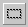
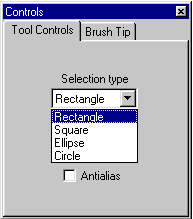
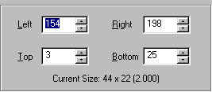
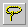
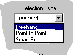
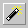
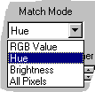

التحديد في
Paint Shop Pro
[المقدمة]
[لنتعرف...]
[الأدوات]
[الألوان]
[التحديد]
[إلغاء التدرج]
[New Image]
[فرشاة الرسم]
[التجانب]
[خلفيات الصفحات]
ونعني بالتحديد: " اختيار المنطقة من الرسم (أو عدة مناطق معاً) والتي نرغب بإجراء عمليات التحرير عليها. كالنسخ والقص والحذف والتعديل... إلخ" . وبالطبع فإن هذه العملية تعد من المهارات الأساسية التي يجب إتقانها ليس فقط في PSP بل في أي برنامج يعمل في بيئة Windows
يحتوي PSP على ثلاث أدوات للتحديد:
أداة التحديد المنتظم: 
وتستخدم عندما تكون المنطقة المراد تحديدها منتظمة كالمربع Square أو المستطيل Rectangle أو الدائرة Circle أو الشكل البيضاوي Ellipse . وتستطيع اختيار شكل التحديد من لوحة التحكم التي تظهر مرافقة لهذه الأداة. ففي حالة المربع أو المستطيل تتم عملية التحديد من خلال السحب والإفلات وذلك من زاوية الشكل وحتى الزاوية المقابلة. أو بطريقة أخرى حيث نقوم بالنقر المزدوج على زر الأداة مما يؤدي إلى ظهور صندوق الحوار التالي:
 والذي نحدد من خلاله إحداثيات الزوايا بالنسبة للشكل المطلوب تحديده. وكما ترى فنحن هنا نريد تحديد شكل تبلغ إحداثيات زاويته اليسرى العليا 3،154 وإحداثيات زاويته اليمنى السفلى 198,25.
أما في الدائرة أو الشكل البيضاوي فتتم عملية التحديد من المركز (مركز الدائرة أو الشكل) إلى الخارج بإتجاه محيط الشكل المطلوب.اليد الحرة: 
أداة التحديد غير المنتظم، وتستخدم عندما تكون المنطقة المطلوبة غير منتظمة أو واضحة المعالم، وتتم هذه العملية من خلال ثلاثة خيارات: Freehand:
لتحديد المناطق غير المنتظمة، وفيها تتم عملية التحديد بالسحب والإفلات من خلال رسم خط يحيط بالمنطقة المطلوبة.Point to Point:
أي من نقطة إلى نقطة. وتستخدم لتحديد مناطق الأشكال المضلعة غير المنتظمة. ويتم التحديد من خلال النقر على كل نقطة من النقاط التي تشكل زوايا الشكل المطلوب. فيقوم البرنامج برسم خط مستقيم بين كل نقطتين تلقائياً. وعندما تنتهي من تحديد المنطقة المطلوبة أنقر نقراً مزدوجاً لكي يتوقف البرنامج عن رسم هذه الخطوط.Smart Edge:
من المزايا المستحدثة في هذا الإصدار من البرنامج. ويستخدم هذا الخيار لتحديد مناطق التباين بين الألوان في الصورة. فأنت تقوم بالنقر على نقطة ما والسحب للنقر على نقطة أخرى فيقوم البرنامج تلقائيا برسم مستطيل بين النقطتين محددا ما بداخل هذا المستطيل من خطوط تباين بين الألوان (في المنطقة المحصورة في هذا المستطيل).العصا السحرية: 
الأداة الثالثة للتحديد. وهي تعمل على أساس تحديد المناطق التي تحمل نفس اللون أو نفس درجة السطوع أو الكثافة اللونية. وهنا كل ما عليك فعله هو تحديد الخيار المناسب ثم وضع المؤشر على اللون المطلوب تحديده ثم النقر، لتجد أن البرنامج قد قام بتحديد كل المنطقة المتواصلة التي تحمل نفس اللون. وما أعنيه بالمنطقة المتواصلة هو أن البرنامج لن يقوم بتحديد المناطق الأخرى التي تحمل نفس اللون إن كان يفصلها عن المناطق الحالية ألوان أخرى.
عند استخدام أيّاً من أدوات التحديد السابقة سوف يظهر خط متلألىء حول المنطقة المحددة ليدل عليها. ويمنحك البرنامج الفرصة لإخفاء هذا الخط وذلك باختيارك الأمر Hide Marquee من قائمة Selections. لكن إنتبه فهذا لا يعني أنك قد ألغيت التحديد الموجود. فهو لا زال فعالاً وسيسري عليه أي عملية تقوم بها. وإذا أردت إعادة إظهاره فقم باختيار الأمر مرة أخرى (تلاحظ وجود علامة ü لتدلّ على أن الأمر فعال)
كما تحتوي قائمة Selections على عدة أوامر أخرى خاصة بالتحديد، منها
Select All لتحديد كل الصورة
Select None لإلغاء التحديد أياً كان عن الصورة
Invert لعكس منطقة التحديدوإذا أردت تحديد أكثر من منطقة في نفس الوقت بأي من هذه الأدوات (أو بعبارة أخرى: إجراء عدة عمليات تحديد معاً) فقم بالضغط على المفتاح SHIFT بصورة مستمرة أثناء إجراء عمليات التحديد. وبالمقابل إذا أردت إزالة منطقة من التحديد فاضغط المفتاح CTRL أثناء عملية التحديد.
تحمل لوحة التحكم الخاصة بكل من هذه الأدوات خيارات أخرى أهمها:
Feather:
مع أن الكلمة تعني (ريشة) إلا أني لا أعرف السبب في هذه التسمية ولا أعتقد أنها تمتّ للريش بأي صلة، ولأن الصورة تغني عن ألف كلمة فأنظر الشكل التالي الذي يوضح معنى هذا المصطلح:لقد قمت في الحالتين بتحديد دائرة قطرها يساوي 120 بيكسل لكن مع تغيير مقدار Feather حسب الرقم المكتوب على كل دائرة. لاحظ أن الدائرتين تظهران وكأنهما مختلفتين في المساحة مع أنهما حددتا بنفس القطر. لاحظ كذلك أنه كلما زاد مقدار Feather زادت نعومة حواف التحديد وتظهر كما لو أنها تخبو تدريجياً والعكس صحيح.
إذن نستطيع القول أن هذا الخيار يعني مقدار حدة حافة التحديد. وعندما نضيفه إلى التحديد فهذا يعني إعطاء فسحة إضافية من الفراغ ليظهرالتحديد كما لو كان يخبو تدريجياً.
Antialias:
على الرغم من ظهور هذا الخيار هنا فإن هذه الخاصية لا تتعلق فقط بهذا الموضوع (موضوع التحديد) بل إنها ترتبط بأدوات أخرى في البرنامج مثل الخطوط والأشكال الهندسية والنصوص ولهذا السبب فقد فضلت أن أفرد لها صفحة مستقلة.

| إتش.بي بالعربية © 1998-1999 يحيى الشريف |
H.P in arabic © 1998-1999 Yahya Al-Sharif |